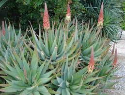

Aloès

Aloès (Aloe spp de la famille des Liliacées)
Très toxique par ingestion.
Partie toxique pour les chats en général et le Korat en particulier :
Toute la plante.
Symptômes du processus pathologique :
Diarrhée contenant du sang, Polyurie, sécrétion excessive d'urine (un Korat peut faire plusieurs litres d'urine quotidienne !) ; hématurie – globules rouges dans l'urine.
Origine de la toxicité (principe actif) :
Suc anthranoïdes, principalement de l'aloïne.